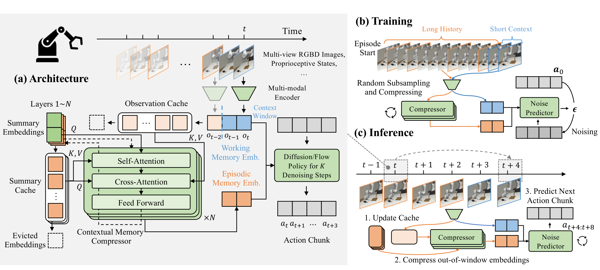
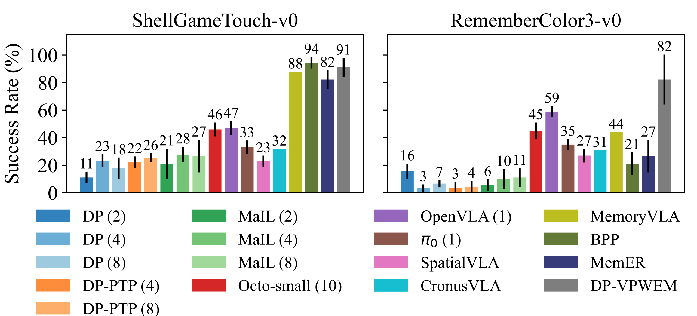
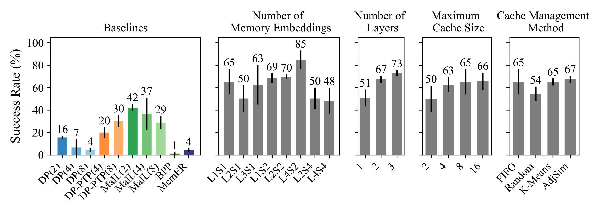

能拿到一套每步成本近似常数的在线记忆：多 2.24M 参数、显存 +78MB、推理 +0.05 s，换 MIKASA 两任务平均 86.5%。代价是压缩不可逆——被压掉的帧再也取不回来，而且压缩器只受行为克隆损失约束，没有「保真」这项要求。
- 最小可复用件
M=2个可学习 query、N=2层的 attention compressor，每层挂一条 detach 的 summary cache，外加 FIFO 观测 cache（S=8）；输出 2 个 episodic token，与滑窗L=2的 working token 一起作为扩散去噪网络的 cross-attention 条件。- 主要风险
- 压缩不可逆导致证据丢失（缓存满即 FIFO 丢弃，且摘要 embedding 已被覆写）；压缩器只在 BC 损失下端到端训练，可能编码「对动作有用但与任务无关」的伪相关；固定 2+2 token 在超长任务上必然饱和，且饱和点无法从训练损失看出来。
- 复现门槛
- CleanDiffuser 代码库 + 单张 RTX 4090；MIKASA / MoMaRT / Robomimic 仿真各 3 个随机种子；真机需 AgileX Cobot Magic 平台、180 条示教、1e6 梯度步。
1. 核心摘要
非马尔可夫操作任务要求策略记住「已经看不见但仍在起作用」的东西：杯子被盖住前的球位、方块被搬走前的颜色、本 episode 开头自己在哪一侧。现有做法两头为难：单帧或 2–10 帧的固定窗口直接丢历史；把窗口拉长则自注意力成本按 O(L²) 涨，而且长历史里的 nuisance 相关会诱发因果混淆与 copycat，训练误差降、分布外崩。VPWEM 的解法是把历史拆成两层——工作记忆保留最近 L=2 帧的观测 embedding（FIFO 滑窗），情景记忆由一个 Transformer 压缩器把滑出窗口的帧递归压成固定 M=2 个 token；压缩器每层自带一条 summary cache，用可学习 query 先对「过去各步的 query embedding」做 self-attention，再对观测 cache 做 cross-attention，输出经 MLP 投影成 episodic embedding，与工作记忆一起条件化扩散去噪网络。
关键在于预算被钉死：观测 cache 上限 S=8、query 数 M=2、层数 N=2，因此每步的 attention 规模与 episode 长度无关，训练时也不需要沿时间反传（cache 入库前 detach）。在 MIKASA 的两个记忆任务上，DP-VPWEM 取得 ShellGameTouch 91%、RememberColor3 82%（两任务均值 86.5%），RememberColor3 上一次优基线 OpenVLA 只有 59%；MoMaRT 五个长时程移动操作任务的平均列为 69%（DP 50%、MaIL 66%）。真机上把胶带放回原盘，成功率从 DP 的 37% 提到 67%，单次 action chunk 延迟 72 ms → 79 ms。
判定：这是目前把「固定预算的持续在线状态」做得最干净的一篇——它不检索、不选帧、不调用 VLM，只用一个 2.24M 参数的压缩器维持 2 个 token 的 episode 摘要；代价是摘要只能整体覆盖、不能回溯，且摘要质量没有任何显式监督。适合作为「我的策略需要一个常数成本的长程状态」时的第一版实现。
2. 记忆环节定位
主命中记忆表征与长期维护。表征这一格是彻底的：记忆被写成两组定长向量（2 帧 working + 2 个 episodic token），不是原始帧、不是关键帧下标、也不是文本摘要，因此下游只能消费向量，无法回查证据。长期维护这一格靠硬预算实现：观测 cache 上限 8、摘要 token 固定 2 个、淘汰规则 FIFO，任何长度的 episode 都占同样显存与算力。写入触发只标部分命中——写入门槛为零，帧一滑出窗口就进 cache，没有「是否值得记」的判断，唯一的取舍发生在淘汰端。
| 环节 | 内容 |
|---|---|
| 输入 | 每步 Nc 路多视角 RGBD + 本体感知；单帧经各自图像编码器得 oI,t ∈ R^DI、本体得 oP,t ∈ R^DP，拼接后过 MLP 得 ot ∈ R^D（D=256），并记帧在 episode 内的时间步 τ |
| 记忆单位 | 工作记忆 = 最近 L=2 个 ot（即 2 帧）；情景记忆 = M=2 个 D=256 的摘要 token，每步整体重算一次，不是逐帧存档 |
| 写入频率 | 每帧。滑窗内的帧直接可用；出窗帧加位置编码 fτ = oτ + PE(τ) 后写入观测 cache（FIFO，上限 S=8）；压缩器的 summary cache 每步更新一次（存本层 query embedding，上限同为 S） |
| 读取条件 | 无条件。每步都读全部记忆，不做相似度匹配、不做 top-k、不做任务相关性筛选——「检索」这一格为空是设计选择，不是遗漏 |
| 交给下游 | 2 帧 working embedding 与 2 个 episodic embedding 一起作为扩散去噪网络（Transformer decoder）的 cross-attention 条件，预测 H=8 步 action chunk |
| 在线性 | 因果：只用 o≤t，不用未来帧；用本体感知但非 oracle 状态；容量有硬上限（S=8, M=2）；遗忘策略是 FIFO 淘汰（消融中 K-Means、AdjSim 与之相当，Random 明显更差） |
3. 问题与动机
论文把「历史变长」的代价拆成两条，各自有可量化的失败模式。
第一条是成本。自注意力对历史长度是平方级。Table II 把这条曲线量出来了：同一套 DP-PTP，上下文从 4 帧加到 128 帧，模型只从 50.67M 涨到 50.73M，但显存 656 MB → 1792 MB、训练 0.02 → 0.18 s/step、推理 0.17 → 0.72 s；而成功率并没有跟着涨——46.1 / 45.0 / 49.1 / 49.6 / 49.6 / 40.4，到 128 帧反而掉到 40.4。也就是说，单纯加长上下文既买不到性能，也过不了实时性。
第二条是统计。不加选择地条件化长历史会引入 nuisance 相关，作者引用 causal confusion 与 copycat 两条线索说明：策略可能靠「上一动作」或某个共现的视觉线索把训练误差压低，一旦分布漂移就整体失效。这也是为什么「把窗口开到 128 帧」的做法在 Table II 里先平后降——多出来的帧给的是捷径，不是证据。
既有替代路线各有短板。RNN/SSM 类（Robomimic 的 LSTM 基线、MaIL 的 Mamba 去噪网络）把全部历史压进一个定维隐状态，容量与遗忘都不可控；论文顺手给了个反例：把 MaIL 的 Mamba 隐维从 16 加到 64，Long-Horizon Square 上成功率先从 42% 升到 47%，再跌到 34%，说明「加参数」不等于「加记忆」。逐 token 自回归的做法（把观测与动作 token 交错喂进 Transformer）能吃到长上下文，但推理随序列线性变慢，且强依赖 action tokenizer 的设计。VLA 侧的记忆路线则是另一类：MemoryVLA 做决策相关的记忆条目检索与融合，BPP 用现成 VLM 挑关键历史帧，MemER 微调高层 VLM 选帧并生成文本子目标，ContextVLA 对多帧 VLM 特征做平均池化，CronusVLA 用后训练把单帧 VLA 扩到多帧。它们共同的隐含前提是「记忆要靠一个大模型来读写」——BPP 与 MemER 里的 Qwen3-VL 2B 每次查询约 0.9 s，作者据此指出这条路的延迟代价远高于一个 2.24M 参数的压缩器。
| 维度 | DP / DP-PTP（固定窗口） | MaIL（Mamba 去噪） | VPWEM |
|---|---|---|---|
| 历史如何进入 | L 帧连续观测直接拼进条件 | 经 SSM 隐状态递归传递 | 窗口内 2 帧直读；窗口外经压缩器压成 2 个 token |
| 历史长度上限 | 硬上限 L，超出即丢 | 理论无限，实际受隐状态容量限制 | 全长可覆盖，但在 cache S=8 之外只留摘要 |
| 每步成本随长度 | O(L²) | O(1)（但隐状态定维） | O(1)（M·S 固定） |
| 能否回查具体帧 | 能（窗口内） | 不能 | 只能回查最近 8 帧；更早的已在摘要里 |
4. 方法拆解

Figure 2：架构 (a)、训练 (b)、推理 (c) 三段。绿色模块为可学习部分（多模态编码器、压缩器、summary embedding、噪声预测器），整体用行为克隆损失端到端优化。原图：作者 LaTeX 源码 figure/framework.pdf 以 300 dpi 渲染，对应原文第 4 页 Figure 2。
4.1 观测编码与工作记忆
每步把 Nc 路相机的 RGBD 分别送进各自图像编码器，得视觉特征 oI,t ∈ R^DI；本体感知单独编码成 oP,t ∈ R^DP。两者拼接后过一个 MLP，得到融合的单帧表示 ot ∈ R^D，D=256。工作记忆就是这串表示上的一个 FIFO 滑窗：
wt ≜ ot−L:t = concat(ot−L+1, …, ot−1, ot) ∈ R^(L×D)，L = 2
注意 L=2 真的很短——它对应基线里的 DP(2)。这一点比任何消融都重要：VPWEM 在 ShellGameTouch 上的 91% 是在只有 2 帧工作记忆的条件下拿到的，而 DP(2) 只有 11%。所以增益不来自「看得更长的窗口」，只能来自窗口之外那 2 个 episodic token。
4.2 情景记忆：递归压缩而不是检索
帧一滑出窗口，先补时间信息 fτ = oτ + PE(τ)（τ 是帧在 episode 内的步号），再推进观测 cache：Cf ← M(Cf ∪ fτ)，M 是带最大长度 S 的淘汰操作，主实验取 FIFO，S=8。
压缩器是标准 Transformer encoder 堆叠（N=2 层），每层包含三件事：对 past summary 的 self-attention、对观测 cache 的 cross-attention、以及 FFN；每次子模块前后都有 LayerNorm 与残差。每个 block 处理 M=2 个 query，第一层的 query 是可学习参数 q：
q1,τ = q
x1,n = qn,τ + attn(qn,τ·Qs, C̄q,n·Ks, C̄q,n·Vs)
x2,n = x1,n + attn(x1,n·Qc, C̄f·Kc, C̄f·Vc)
qn+1,τ = x2,n + MLP(x2,n)
eτ = MLP(qN,τ)
其中 C̄f = concat(Cf) ∈ R^(S×D) 是观测 cache，C̄q,n = concat(Cq,n) ∈ R^(S×M×D) 是第 n 层专属的 summary cache，每步按 Cq,n ← M(Cq,n ∪ qn,τ) 追加。也就是说：递归机制不是 GRU，而是「可学习 query + 每层一条历史 query 缓存」的迭代式 attention pooling——没有门控、没有标量隐状态，历史以「过去每步每个 token 的 query embedding」形式保留，下一步的 query 先在这些摘要上做注意力、再到观测 cache 里取细节。
这个设计有三处工程含义。其一，递归只发生在 query 空间，观测只保留最近 S 帧，因此 S 是「细节回看窗口」，M 是「长期摘要带宽」，两者解耦。其二，fτ 与 qn,τ 在入 cache 前被 detach，梯度不沿时间反传，历史信息只能靠 summary embedding 传递——这既是显存优化，也是防捷径的机制（压缩器无法用梯度把答案偷偷塞进缓存）。其三，因为 query 数固定为 2、cache 上限固定为 8，每步注意力的规模是常数，与 episode 已跑多久无关。
4.3 训练：三个防捷径的开关
训练样本是 (o≤t, at:t+H)，即从 episode 起点到 t 的完整历史，因此输入长度逐样本不同。工程上有三步处理：先按样本在 episode 内的位置排序并按长度分桶，使同一 mini-batch 长度可比；仍不齐时用该 episode 的首帧左填充；再把轨迹切成固定比例的分段，每段随机抽一帧作为压缩器输入（subsample ratio：MIKASA 取 5，其余取 20）。随机抽样是防捷径的第一道开关：压缩器看到的不是连续帧，而是覆盖全历史、但位置每轮都变的稀疏样本，无法拟合「固定帧间隔 → 固定动作」的模板。
第二道开关是上文的 detach：缓存不参与反传，压缩器不能通过缓存「记住」训练标签。第三道是 Table I 里的 memory embedding dropout = 0.3：训练时以一定概率丢掉记忆 token，迫使策略在记忆缺失时仍能动作——这既降低对记忆的过拟合，也让记忆必须携带「不可由当前 2 帧推出」的信息才有价值。
监督信号只有一个，即扩散噪声预测损失：
L = E(o,a0),ε ‖ ε − εθ(√ᾱk·a0 + √(1−ᾱk)·ε, wt, eτ, k) ‖²
噪声预测器沿用 DP 的 Transformer decoder 与 cross-attention 掩码，条件里同时有 wt 与 eτ。压缩器没有任何重建、对比或预测辅助损失，它的「该记什么」完全由行为克隆间接决定；作者把 reconstruction 一类辅助目标列进 future work。工程实现上沿用 DP-PTP 的多阶段训练：先用短上下文策略训视觉编码器，再冻结它训练长上下文部分。这一点很关键——如果编码器也在变，压缩器学到的摘要会随表征漂移而失效。
4.4 推理：每步都压，但压的是常数
每个决策步三件事：（1）编码新帧、更新观测 cache 与各层 summary cache；（2）把刚出窗的 embedding 过一遍压缩器，得到本步的 2 个 episodic token；（3）以 wt 与 eτ 为条件，跑 K=50 步 DDPM 去噪，输出 H=8 的 action chunk。
「每步是否都要压」的答案是是：summary cache 每步都被当前 query 更新，episodic token 是「到此刻为止的摘要」，不是「上次压缩后的缓存」。但成本是常数——压缩器前向只有 2 层、2 个 query、8 个 key，相对 50 步去噪可以忽略。Table II 的直接对照说明了这点：DP-VPWEM 在 S=8 下模型 52.98M（DP-PTP 50.67M）、显存 734 MB（DP-PTP 上下文 4 帧为 656 MB）、训练 0.09 s/step、推理 0.22 s，而成功率为 58.3% vs 46.1%（unload-suboptimal）。换句话说，它的成本与「4 帧上下文」处在同一量级，成绩却高于 128 帧上下文。
在线边界要说清楚：策略是因果的，只吃 o≤t；本体感知来自机器人自身，不是仿真 oracle 状态；历史有硬上限，超出的部分只有摘要；没有任何跨 episode 的持久记忆，episode 结束即清空。
5. 证据与实验
三套仿真 + 一台真机，全部用 CleanDiffuser 实现，单张 RTX 4090，三个随机种子（100/200/300），报均值与标准差。MIKASA 用两个记忆任务：ShellGameTouch-v0（球被杯子盖住后仍要记住位置并去碰对杯子）与 RememberColor3-v0（记住方块颜色并在多色中选出它）。
| 方法（括号内为上下文帧数） | ShellGameTouch | RememberColor3 | 两任务均值（本页计算） |
|---|---|---|---|
| DP (2) / (4) / (8) | 11 / 23 / 18 | 16 / 3 / 7 | 13.5 / 13 / 12.5 |
| DP-PTP (8) | 26 | 4 | 15 |
| MaIL (8) | 27 | 11 | 19 |
| Octo-small (10) | 46 | 45 | 45.5 |
| OpenVLA (1) | 47 | 59 | 53 |
| π0 (1) | 33 | 35 | 34 |
| SpatialVLA | 23 | 27 | 25 |
| CronusVLA | 32 | 31 | 31.5 |
| MemoryVLA | 88 | 44 | 66 |
| BPP（Qwen3-VL 2B 选帧） | 94 | 21 | 57.5 |
| MemER（Qwen3-VL 2B 选帧 + 文本子目标） | 82 | 27 | 54.5 |
| DP-VPWEM (L2S2) | 91 | 82 | 86.5 |

Figure 5：MIKASA 两个记忆任务的成功率（%），柱顶标数值、误差棒为 3 个种子的标准差。左图 ShellGameTouch 上 BPP（Qwen3-VL 2B 选帧）与 VPWEM 分别为 94 / 91，误差棒重叠；右图 RememberColor3 上 VPWEM 82% 明显领先。原图：作者 LaTeX 源码 figure/benchmark_mikasa.pdf 以 300 dpi 渲染，对应原文第 6 页 Figure 5。
数字取自 Figure 5 柱顶标注（成功率 %）。两件事必须同时说清：（i）VPWEM 并非每个任务都第一——ShellGameTouch 上 BPP 以 94% 略高于 91%，两者误差棒重叠，不应读成显著差异；（ii）优势几乎全部来自 RememberColor3：82% 对次优 OpenVLA 59%，其余方法多在 3–44%。本文正文称「在 MIKASA 记忆任务上比包括 VLA 在内的 SOTA 平均高出 20% 以上」，按本页对上表两列取均值，VPWEM 86.5% 比最强的记忆型 VLA（MemoryVLA，66%）高 20.5 个百分点，比 OpenVLA（53%）高 33.5 个百分点——「20%」的具体基数论文未写明，可理解为相对最强 VLA 基线的口径。
MoMaRT 用五个长时程移动操作任务（dwclean / skclean / dwsetup / dssetup / unload，各含 expert 与 suboptimal 两种示教），Robomimic 用 Square、Transport（ph / mh）以及来自 DP-PTP 的非马尔可夫变体 Long-Horizon Square（要把方块放到离初始位置最远的钉子上，噪声脚本示教使当前位姿无法推出目标）。Figure 4 的 Average 列：
| Average 列 | DP | DP-PTP | RNN | DP-VPWEM | MaIL-VPWEM | |
|---|---|---|---|---|---|---|
| MoMaRT（10 个设置） | 50 | 62 | 66 | 41 | 69 | 71 |
| Robomimic（4 个设置） | 60 | 71 | 73 | 68 | 72 | 73 |
MoMaRT 上正文说「平均提升 5%」，但按图示 Average 列，DP-VPWEM 69% 相对最强基线 MaIL 66% 只高 3 个百分点，相对 DP 的 50% 高 19 个百分点；「5%」更像是对逐任务增量取平均的结果，具体口径未在已核验的公开材料中确认。Robomimic 一侧作者自评「与基线相当」，72% 与 MaIL 的 73% 在误差范围内，符合「马尔可夫任务上记忆不添乱」的预期。
成本对照（Table II，unload-suboptimal）：
| 指标 | DP-PTP L=4 | DP-PTP L=32 | DP-PTP L=128 | DP-VPWEM |
|---|---|---|---|---|
| 模型大小 (M) | 50.67 | 50.69 | 50.73 | 52.98 |
| 显存 (MB) | 656 | 942 | 1792 | 734 |
| 训练 (s/step) | 0.02 | 0.08 | 0.18 | 0.09 |
| 推理 (s) | 0.17 | 0.35 | 0.72 | 0.22 |
| 成功率 (%) | 46.1 | 49.6 | 40.4 | 58.3 |

Figure 6(a)：Long-Horizon Square 上的五组消融，纵轴均为成功率（%）。从左到右依次为基线对比、记忆 token 数（LxSy）、压缩器层数、最大 cache 容量、淘汰策略。原图：作者 LaTeX 源码 figure/ablation.pdf 以 300 dpi 渲染，对应原文第 7 页 Figure 6(a)。
消融都在 Long-Horizon Square 上做（Figure 6a）：基线一侧 DP(2)/(4)/(8) 为 16/7/4、DP-PTP(4)/(8) 为 20/30、MaIL(2)/(4)/(8) 为 42/37/29、BPP 1、MemER 4；压缩器层数 1/2/3 分别 51/67/73，说明「更深 → 摘要更有信息量」；最大 cache 2/4/8/16 为 50/63/65/66，超过 8 就饱和——作者的解读是长历史本身冗余，压缩器能把必要信息塞进少数 token；cache 管理上 FIFO 65、K-Means 65、AdjSim 67、Random 54，除随机淘汰外无差别，因此主实验用最简单的 FIFO。记忆 token 数上，L1S1（1 个长期 + 1 个短期）已达 65%，已超过所有固定窗口基线；图示随 token 数增加整体上升（最高一根为 85%），但 L2S4 / L4S4 回落到 50% / 48%，作者据此选 L2S2 作主配置。这里有一个容易读混的符号问题：变体名 LxSy 中的 L 指长期（episodic）token 数、S 指短期（working）帧数，而 Table I 用 L 表示 short-term 嵌入数、M 表示 long-term 嵌入数，两套记法恰好相反。
「关键信息探针」是本文最有意思的一处间接证据（Figure 6b）：在 100 条 episode 上采集 working 与 episodic embedding，按时间步分组，训一个 MLP 去回归初始帧的 embedding。结果显示 episodic token 保留的初始状态信息始终多于 working token，验证损失低 20 倍；即便跑到第 400 步，仍低 4 倍——这与「压缩器确实把 episode 级信息带了下来」一致，也与海马体把工作记忆固化到皮层的类比自洽。注意这只是相关性证据：探针能解码出初始状态，不等于策略真的用了它。
泛化实验只做了一个方向：把在 ShellGameTouch 上训好的冻结图像编码器 + 压缩器直接迁到 ShellGamePush 与 ShellGamePick，分别得 90% 与 63%。这说明摘要模块没有过拟合到单一任务的视觉细节，但没有跨 embodiment、跨相机布置的迁移结果。真机部分：AgileX Cobot Magic，任务是把胶带放回原盘，180 条示教、1e6 步、30 次试验，DP 37% → DP-VPWEM 67%，单次 action chunk 延迟 72 ms → 79 ms（该 79 ms 与 Table II 的 0.22 s 统计口径不同，前者是部署流水线的 action chunk 端到端，后者是仿真里含 50 步去噪的完整前向，二者不可直接比较）。
不能横向比较的地方有三处：VLA 基线的数字（Octo / OpenVLA / π0 / SpatialVLA / CronusVLA / MemoryVLA）直接引自 MIKASA 原文与 MemoryVLA，不是作者在 CleanDiffuser 里重跑的，训练数据、观测分辨率、动作空间未必一致；BPP 与 MemER 用的是 Qwen3-VL 2B 的高层摘要，与 5 帧级联的 DP 类基线不是同一类系统；所有仿真结果只有 3 个种子，误差棒在 ShellGameTouch 上明显偏大。
6. 优点、局限与 VLA 适配
可迁移
「定长 query + 每层 summary cache + 出窗即压缩」这套结构，可以直接挂到任何有 cross-attention 条件的策略上（扩散、flow、甚至 VLA 的 action head）；三处防捷径的做法（分段随机抽样、cache detach、记忆 token dropout 0.3）与主干无关，可单独复用；把 S（细节回看窗口）与 M（摘要带宽）拆成两个旋钮，比「一个窗口长度」好调。
不成立的前提
它假设「任务相关信息可以在 BC 损失下被无监督地压进 2 个 token」。当任务需要记住多个离散事实（例如 5 个物体的位置与颜色组合），2 个 256 维 token 的信息带宽会先饱和，而饱和在训练损失上看不出来，只表现为成功率突然掉。它也假设压缩器学到的捷径不会伤人——但论文没有重建或对比约束来排除这一点，探针实验只能证明「初始状态可解码」，不能证明「策略依赖的是正确的东西」。
延迟风险。每步都要跑一次压缩器，虽然只有 2 层，但它串在控制回路里，且不可与 50 步去噪并行（去噪需要 eτ 作为条件）。真机上 79 ms/chunk、chunk 长 8 步，等效控制频率取决于执行器如何插值；若把 M 或 S 调大以换精度，压缩器的 query 数或 key 数随之增长，延迟会上升；论文只给了 DP-PTP 在上下文 4→128 时的成本曲线，没有给 VPWEM 在 S=2…16 下的延迟，这条曲线需要先在目标硬件上量一遍。
真机闭环风险。压缩器是开环的：它压什么完全由「帧何时滑出窗口」决定，与任务是否处于关键阶段无关。真机上帧率抖动会让 τ 与位置编码错位，而 PE 是在训练时按步号注入的，部署帧率与训练不一致时需要重新标定，否则摘要会把「时间」记错。另外 FIFO 丢掉的是最旧的帧，长任务里最需要记住的往往正是最早那几帧（初始位姿、初始颜色），此时唯一的载体就是被反复覆写的 summary token——这一点在 Long-Horizon Square 上就是靠探针的 20 倍差距撑着的，属于弱证据。
最小改造方案。如果目标策略是 VLA：把 eτ 拼到动作专家的 cross-attention 条件里（与语言 token 并列），压缩器单独训练、冻结 VLM 主干；先在 2 帧窗口的基线上验证「记忆有没有用」，再逐步加 M。若要缓解压缩不可逆，按作者自己列的 future work 加一条重建损失（从 eτ 解码回被抽样的帧 embedding），或按 S 保留一小份原始 embedding 供注意力回查——这两条都不改变固定预算的前提。
7. 落地清单
- 先在目标任务上跑通 DP(2) 基线并记录成功率（MIKASA 参照值：ShellGameTouch 11%、RememberColor3 16%）。若基线已经很高，说明任务本身接近马尔可夫，加记忆不会有收益。
- 按 Table I 配压缩器：
N=2层、M=2个 query、L=2帧滑窗、观测/摘要 cache 上限S=8、FIFO、memory dropout 0.3、subsample ratio 5（短任务）/ 20（长任务），并确认fτ与qn,τ入 cache 前已 detach。 - 扫两个旋钮：
S ∈ {2,4,8,16}、M ∈ {1,2,4}。验收标准不是「越高越好」，而是「S超过 8 后是否饱和」——若仍在涨，说明任务的细节需求超出固定预算，应改用可回查的混合方案。 - 加一条首帧探针作为记忆保真度的体检：采 100 条 episode 的
eτ与wt，训 MLP 回归o0，比较两者 MSE（论文口径：episodic 低 20 倍）。若两者接近，说明压缩器没在存 episode 级信息。 - 部署前做延迟预算：单次 action chunk 79 ms（50 步 DDPM、
H=8、算力为原文平台）。若控制周期要求更短，先降K或换 flow matching，不要先砍M——砍M伤的是记忆带宽，砍K伤的是动作精度，后者更容易补偿。 - 做一组对照：在同样配置下加重建辅助损失，与纯 BC 训练比较 Long-Horizon 类任务的成功率与探针 MSE，验证「只靠 BC 学出来的摘要」是否存在捷径。
来源：Yuheng Lei, Zhixuan Liang, Hongyuan Zhang, Ping Luo, "VPWEM: Non-Markovian Visuomotor Policy with Working and Episodic Memory", IEEE Robotics and Automation Letters（2026 年 7 月录用）, arXiv:2603.04910v2；代码 https://github.com/HarryLui98/code_vpwem。结构参数取自第 IV 节与 Table I（N=2, M=2, L=2, S=8, dropout 0.3），成本数字取自 Table II，MIKASA 数字为 Figure 5 柱顶标注、MoMaRT / Robomimic 为 Figure 4 的 Average 列，消融取自 Figure 6(a)，探针与真机数字取自第 V-C、V-D 节与 Figure 6(b)。「两任务均值」一列为本页按图中两柱取算术平均所得。
图像说明：三张图都取自作者 LaTeX 源码中的独立矢量 PDF，按其内容边界以 300 dpi 渲染为 PNG（不是整页截图，也未从论文页面裁切）——figure/framework.pdf（原文 Figure 2）、figure/benchmark_mikasa.pdf（原文 Figure 5）、figure/ablation.pdf（原文 Figure 6(a)）。取值为本页对照源码 PDF 渲染放大后逐柱读取。
相关页面：ReMem-VLA · 双层递归 query 记忆 · MIKASA-Robo · 记忆任务基准 · NativeMEM · 原生记忆压缩 · 返回专题三